8장.Liquid–Liquid Extraction with Ternary Systems-INTRO
8장은 Feed 안에 있는 solute A를 solvent S 쪽으로 옮기고, 남은 carrier-rich phase를 raffinate로 빼는 액-액 추출을 삼각형 조성도에서 계산하는 장이다.
ternary system은 3성분계라는 뜻으로 3가지 물질이 존재한다.
| (A) | solute | 빼내고 싶은 물질 |
| (C) | carrier | solute를 원래 품고 있던 원래 액체 |
| (S) | solvent | solute를 뽑아내기 위해 넣는 용매 |
이때 액-액 추출이 일어나면 솔루트가 캐리어에서 솔번트로 이동하면서 다음 두 상이 형성된다: Extract와 Raffinate
extract = 뽑아낸 쪽
raffinate = 뽑히고 남은 쪽
이때 추출은 증류를 쓸 수 없을 때 대안으로 사용한다. 하지만 liquid phase의 열역학 계산이 어렵다는 문제점이 존재한다. 증류는 vapor-liquid equilibrium이라 EOS나 물성식으로 어느 정도 계산이 가능하지만, liquid-liquid extraction은 activity coefficient γ를 알아야 되는 문제가 있다. activity coefficient를 계산하려면 성분쌍마다 binary interaction parameter, BIP가 필요하고, 이 값들이 잘 주어져 있지 않아서 simulation도 어렵다. 즉 추출은 시뮬레이션도 어렵기에 예측이 잘 안되는 문제가 있는 것이다.
일단 용매의 성능을 나타내는 공식은 다음이 있다.'
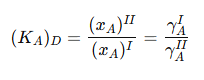 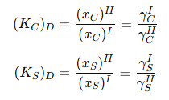
이건 분배계수라고 불린다. 이때 K밑에 붙는 첨자인 A,C,S는 각각 솔루트, 캐리어, 용매를 의미한다. I는 라피네이트이고 II는 추출상이다. 즉 추출상에서 A의 농도/라피네이트에서 A의 농도 비가 분배계수 K이다. 이는 활동도 계수 비로도 환산할 수 있다. 좋은 용매라면 KAD가 1보다 커야 한다.
이때 중요한건 Relative selectivity이다. solute 만 solvent로 가고, carrier 는 따라가지 않아야 하기 때문에
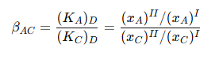
이 값이 크면 좋은 용매라고 볼 수 있다.
----
장치: Mixer–Settler와 multistage extraction
extraction stage 장치가 있다고 할 때, 한단은 mixer+settler로 구성된다.
mixer에서는 피드와 용매를 섞어준다.
settler에서는 섞인 액체를 가만히 두어 두 상으로 갈라준다.
이때 이러한 한단만 있으면 완전분리가 안되므로 multistage를 쓴다. solvent가 아래에서 들어가고 feed가 위에서 들어가는 countercurrent 구조가 일반적이다.
삼각형 조성도: 이 장의 핵심 도구
8장은 x-y 그래프보다 triangular diagram이 핵심이다.
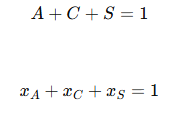
이때 두 성분만 알아도 나머지 한 성분은 알 수가 있다.
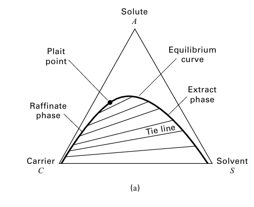
이렇게 도표가 있을때, 삼각형 안에 한 점을 찍어보자. 예를 들어 어떤 점이 A=0.2, C=0.5, S=0.3인 지점에 찍혔다고 해보자. 그럼 그 점은 solute 20%, carrier 50%, solvent 30%인 혼합물이다. 이때 내부에 어떤 영역이 존재하는데, 이는 두 상으로 갈라짐을 의미하는 것이다. Extraction이 되려면 혼합점이 two-phase region 안에 있어야한다. 그래야
Equilibrium curve에서 추출상 추잔상을 아는 방법은 어디에 S가 많냐를 보는 것이다. 왼쪽이 C가 많으므로 추잔상이며 오른쪽은 솔번트가 많으므로 추출상이다.
Plait point라고 해서, extract phase와 raffinate phase가 같아지는 지점도 존재한다.
Hunter–Nash method
삼각형 조성도에서 단수 계산하는 방법이다. Type I/Type II ternary system의 equilibrium-stage 계산법으로 가장 중요한 파트이다. 쉽게말하면 증류처럼 액-액 추출에서 tie line/조작선을 번갈아 타면서 단수 세는 것이다.
(참고: Type II는 서로 잘 안 섞이는 쌍이 두 개 있는 경우인데, Type II에서는 solvent S가 carrier C와도 잘 안 섞이고, solute A와도 완전히 잘 섞이지 않는 경우가 포함된다.)
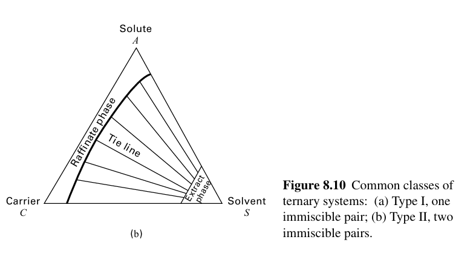 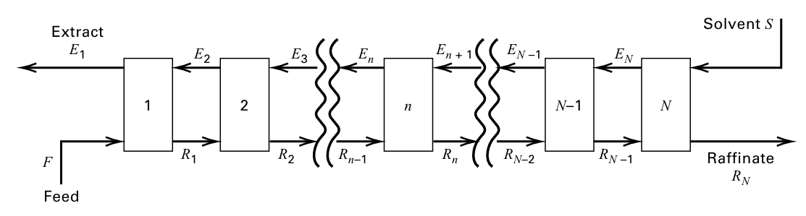
위 그림을 살펴보자. 먼저 F가 들어가고 1단에서 E1과 R1으로 분리된다. 이후 R1은 추출이 안된 상이므로 다시 2단으로 들어가고, E2와 R2로 분리된다. 이를 쭉 거치다보면 맨 위로 도달하며 최종적으로 마지막 N단에서는 S가 들어가고 최종 추잔상 RN이 나온다.이때 (yi)n은 extract En안의 i 질량분율이고 (xi)n은 raffinate Rn안의 i 질량분율이다.
이때 가장 먼저 해야하는 것은, feed와 solvent를 섞은 전체 조성점을 잡는 것이다.
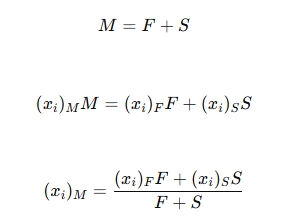
예를 들어 다음 조성이 있다고 해보자.
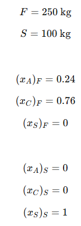
그러면 F와 S를 섞은 믹싱점에서 A,C,S는 다음과 같다.
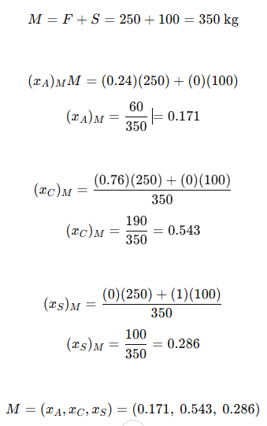
즉 단순히 섞었을때 A,C,S분율이 얼마인지 계산하면 된다.
이제 믹싱점에서 레버룰을 쓸건데, 이때 삼각형에서 F와 S를 직선으로 연결하면 M은 그 선 위에 존재한다.
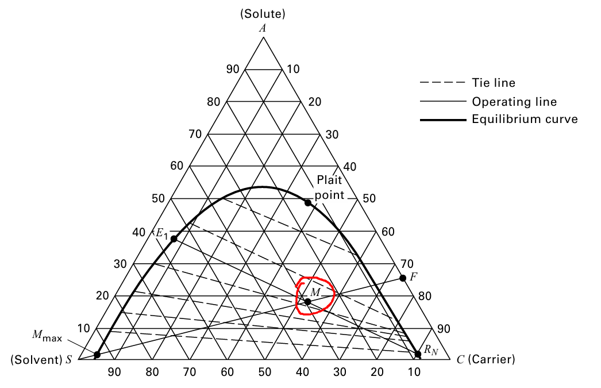
여기서 레버룰을 이용해서 두 점을 구하게 된다. E1과 RN의 비율과 각각의 조성에 대한 정보를 알 수 있다. 이때 보통 문제에서 최종 조성 RN이 목표값으로 주어지며 그러면 삼각형 도표에서 RN을 찍고 M과 연결한다. 그러면 E1도 구할 수 있다. ( 그 선이 equilibrium curve의 extract side와 만나는 점이 E1). 예를 들어 현재 예시에서는 다음과 같다. 레버룰로 서로의 비율을 구하고, 각각의 조성도 읽을 수 있다.
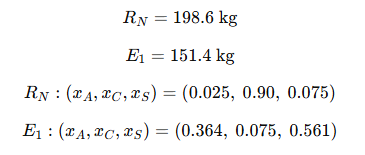 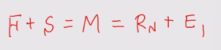
현재까지는 이러한 공식을 사용하였다.
Difference point P
이제 여기서부터 헷갈릴 수 있으므로 정신을 잡아야 한다. difference point P라는 점을 정의할 것이다.
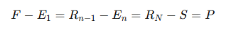
서로 지나가는 stream 두 개의 차이가 모든 단에서 같은 점 P로 표현된다는 가정이다. 는 조작선의 기준점이 된다.
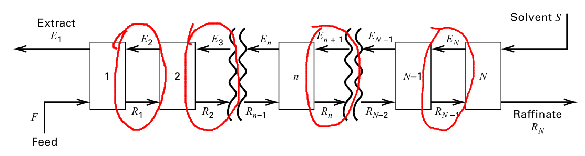
와 RN을 연결한 선, E1과 F를 연결한 선이 한 점에서 만나고, 그 점이 difference point이며, 이 선들이 operating line으로 작용한다.
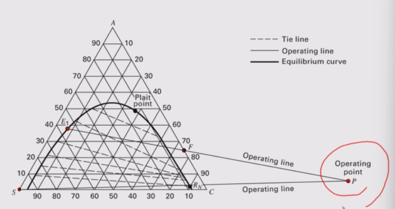
(무슨말인지 알겠는가? S-RN은 위쪽에서의 상황이며 아래쪽에서는 E1-F가 진행된다. 우리는 현재 S와 F의 정보로부터 M을 구하였고, 목표스펙 RN과 M을 연결하여 E1을 구하였다. 이제 E1-F선과 S-RN선을 이어서 둘이 만나는 점이 P선이다.
Tie line은 “평형상태라면 extract와 raffinate 조성이 어떻게 짝지어지는가”를 알려준다.
Operating line은 “다음 단으로 넘어갈 때 물질수지상 어떤 조성이 가능한가”를 알려준다.
단수계산은 tie line→operating line→tie line→operating line을 반복하는 것이다.
즉 이제부터 조작선을 구했으니 조작선과 타이라인으로 단수계산을 할 것이다.
단수계산 하는법
1:최종 extract E1에서 시작한다. E1과 평형인 raffinate는 R1이다. 따라서 E1에서 tie line을 따라가면 R1이 나온다.
2: 이제 R1과 지나가는 스트림은 E2이다. R1, E2,P는 같은 조작선위에 있어야 한다. 따라서 R1->E2가 가능하다.
3. 이를 반복하다가 최종적으로 RN에 도달하면 멈춘다. 사용한 tie line 개수가 equilibrium stage 수이다.
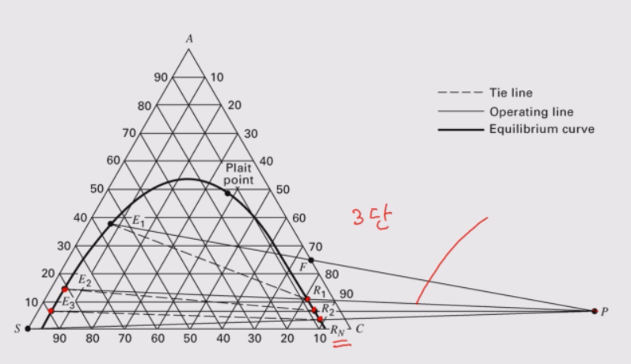
이때 증류를 생각해보면, RMIN이 있었듯이 여기도 비슷한게 존재한다.
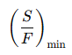
Minimum solvent 조건인 S=Smin에서는 단수 N→∞가 된다. 삼각형 조성도에서는 operating line과 tie line이 겹치는 지점이 생겨 pinch가 되는 것로 표현된다. 미니멈 솔번트는 다음과 같이 계산한ㄴ다.
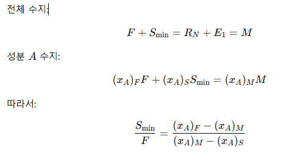
마찬가지로 최대 용매도 있으며 따라서 실제 용매 비율은 다음과 같아야 한다.
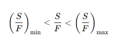